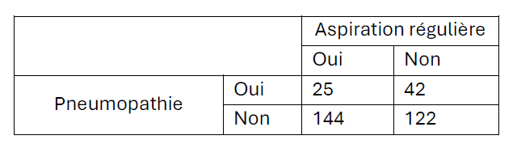
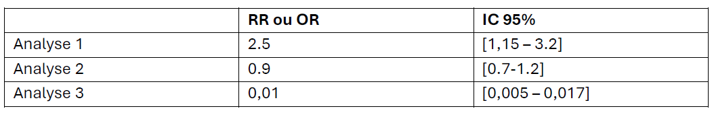

a. Les cas sont les sujets exposés au facteur de risque étudié.
b. Les témoins sont indemnes de la maladie étudiée.
c. Le recueil de l'information sur l'exposition est prospectif.
d. Les perdus de vue sont à l'origine d'un biais majeur.
Bonne réponse : b. Les témoins sont indemnes de la maladie étudiée.
2. En épidémiologie, un biais :
a. Est une erreur aléatoire liée aux fluctuations d'échantillonnage
b. Conduit systématiquement à la surestimation du risque relatif ou de l'odds ratio
c. Est uniquement causé par un facteur de confusion
d. Est une erreur systématique dans l'estimation d'un paramètre
Bonne réponse : d. Est une erreur systématique dans l'estimation d'un paramètre
3. Cochez la réponse FAUSSE concernant le niveau de preuve scientifique d'une étude :
a. Il dépend de la présence de biais dans la planification et la réalisation de l'étude
b. Il est généralement moins élevé pour les études cas-témoins que pour les études de cohortes
c. Il peut être influencé par la taille de l'échantillon et la puissance statistique de l'étude
d. Il est systématiquement plus élevé pour les études transversales que pour les essais contrôlés randomisés
Bonne réponse : d. Il est systématiquement plus élevé pour les études transversales que pour les essais contrôlés randomisés (C'est l'inverse)
4. La loi Evin :
a. Est relative à la lutte contre l'alcoolisme
b. Est relative à la lutte contre l'alcoolisme et le tabagisme
c. Est relative à la lutte contre l'alcoolisme, le tabagisme et toute substance illicite
d. Est relative à la lutte contre tout type d'addictions
Bonne réponse : b. Est relative à la lutte contre l'alcoolisme et le tabagisme
5. Comment nomme-t-on le fait d'envoyer des chercheurs de pays développés étudier des maladies dans des pays en développement sans se renseigner sur le terrain, ni collaborer avec les acteurs locaux ?
a. La recherche euro-colonialiste
b. La recherche en santé
c. La recherche parachute
d. La recherche en santé globale
Bonne réponse : c. La recherche parachute
6. La protection sociale est un sous ensemble de la sécurité sociale :
Vrai
Faux
Réponse : FAUX (La sécurité sociale est un sous-ensemble de la protection sociale)
7. Le Réseau sentinelles participant à la surveillance de 10 indicateurs de santé est une source de donnée :
a. Permanentes exhaustives
b. Permanentes non-exhaustives (par échantillon)
c. Ponctuelles exhaustives
d. Ponctuelles non-exhaustives (par échantillon)
Bonne réponse : b. Permanentes non-exhaustives (par échantillon)
8. Un cabinet de pédiatre fait partie du secteur de soin :
a. Primaire
b. Secondaire
c. Tertiaire
d. Quaternaire
Bonne réponse : a. Primaire
9. Mesure visant à responsabiliser les usagers pour maitriser les dépenses de santé :
a. Le ticket modérateur
b. Les Affections de Longues Durée (ALD)
c. La complémentaire santé solidaire
d. Le dispositif 100% santé
Bonne réponse : a. Le ticket modérateur
10. Lequel de ces axes, ne fait PAS partie du rôle de l'OMS :
a. Accès à l'eau potable
b. Gestion des épidémies
c. Financement de la recherche en santé publique
d. Aucune de ces propositions de ne convient
Bonne réponse : c. Financement de la recherche en santé publique
11. Que signifie l'acronyme PUMA ?
a. Protection Universelle Maladie Anonyme
b. Protection Universelle Maladie
c. Plan Universelle pour les Maladies Anciennes
d. Permettre Un Meilleur Accès
Bonne réponse : b. Protection Universelle Maladie
12. Les coûts associés à une réduction de la productivité du malade sont des :
a. Coûts directs
b. Coûts indirects
c. Coûts intangibles
d. Aucune
Bonne réponse : b. Coûts indirects
13. Dans une analyse de minimisation des coûts :
a. On fait l'hypothèse d'une égalité de l'efficacité des stratégies comparées
b. L'analyse se résume à une comparaison des couts des stratégies comparées
c. L'intervention la moins couteuse est la plus efficiente
d. Toutes ces propositions conviennent
Bonne réponse : d. Toutes ces propositions conviennent
14. Le système de protection sociale français est de type :
a. Mixte combinant des éléments du Bismarckien et du Beveridgien
b. Bismarckien
c. Beveridgien
d. Libéral
Bonne réponse : a. Mixte combinant des éléments du Bismarckien et du Beveridgien
15. Dans un système de santé de type Bismarckien, quelle est la principale source de financement ?
a. Impôts
b. Cotisations sociales (entreprises et usagers)
c. Financement par les usagers
d. Tiers payant
Bonne réponse : b. Cotisations sociales (entreprises et usagers)
16. Le concept de l'aléa moral stipule que la fourniture d'une garantie contre un risque encourage un comportement plus risqué de la part de l'assuré :
Vrai
Faux
Réponse : VRAI
Exercice 2 : Étude de cas (Pneumopathies)
Les pneumopathies acquises en réanimation chez les patients sous ventilation mécanique sont fréquentes et associées à une morbidité et une mortalité importante. Les sécrétions qui s'accumulent au-dessus du ballonnet (sous-glottiques) pourraient augmenter le risque de développer ces infections, mais leur rôle exact n’a pas été formellement prouvé.
Il est possible que l’aspiration régulière par un professionnel de santé de ces sécrétions réduise le risque de pneumopathie, mais cette hypothèse n’a jamais été testée de manière rigoureuse.
Cette pratique n’est d’ailleurs appliquée systématiquement que dans certains services ou chez certains types de patients.
1. Quel type d'étude aimerait-on proposer dans l'idéal pour démontrer que l'aspiration régulière réduit le risque de pneumopathie ?
A. Une étude transversale
B. Une étude expérimentale (essai randomisé contrôlé)
C. Une étude cas-témoin
D. Une étude de cohorte
Bonne réponse : B. Une étude expérimentale (essai randomisé contrôlé)
2. Une étude a comparé l'occurrence de pneumopathie dans le temps entre un groupe avec aspirations régulières et un groupe sans. Quel type d'étude est-ce ?

A. Une étude de cohorte
B. Une étude expérimentale (essai randomisé contrôlé)
C. Une étude transversale
D. Une étude cas-témoins
Bonne réponse : A. Une étude de cohorte (on suit des groupes exposés/non-exposés dans le temps)
3. Quel est le risque de pneumopathie dans le groupe n'ayant pas bénéficié d'aspirations (Groupe "Non") ?
A. 34.4% (42 sur 122)
B. 25.6% (42 sur 164)
C. 59.5% (25 sur 42)
D. 37.3% (25 sur 67)
Bonne réponse : B. 25.6% (42 malades sur un total de 42+122=164 individus)
Exercice 3 : Interprétation statistique

1. Pour l'analyse 1 :
A. Facteur de risque, liaison significative
B. Facteur protecteur, liaison significative
C. Facteur de risque possible, mais liaison non significative
D. Facteur protecteur possible, mais liaison non significative
Bonne réponse : A. Facteur de risque (RR > 1) et liaison significative (l'intervalle ne contient pas 1).
2. Pour l'analyse 2 :
A. Facteur de risque, liaison significative
B. Facteur protecteur, liaison significative
C. Facteur de risque possible, mais liaison non significative
D. Facteur protecteur possible, mais liaison non significative
Bonne réponse : D. Facteur protecteur possible (RR < 1), mais liaison non significative (l'intervalle contient 1).
3. Pour l'analyse 3 :
A. Facteur de risque, liaison significative
B. Facteur protecteur, liaison significative
C. Facteur de risque possible, mais liaison non significative
D. Facteur protecteur possible, mais liaison non significative
Bonne réponse : B. Facteur protecteur (RR < 1) et liaison significative (l'intervalle ne contient pas 1).
Exercice 4 : Calcul d'indicateurs (Gard 1997)
1. Calculer le taux brut de mortalité dans le département en 1997 ?
A. 10.0‰ (6 153 sur 617 903)
B. 3.2 ‰ (1 979 sur 617 903)
C. 49.6% (6 153 sur 12 400)
D. 20.1 ‰ (12 400 sur 617 903)
Bonne réponse : A. 10.0‰ (Nombre de décès total / Population totale)
2. Calculer le taux d'incidence des tumeurs dans le département en 1997 :
A. 4.35 ‰ (2 688 sur 617 903)
B. 49.6% (6 153 sur 12 400)
C. 13.7% (1 695 sur 12 400)
D. 20.1 ‰ (12 400 sur 617 903)
Bonne réponse : A. 4.35 ‰ (Nouveaux cas / Population totale)
3. Calculer le taux de prévalence des tumeurs dans le département en 1997 :
A. 10.0% (6 153 sur 617 903)
B. 49.6% (6 153 sur 12 400)
C. 13.7% (1 695 sur 12 400)
D. 20.1 ‰ (12 400 sur 617 903)
Bonne réponse : D. 20.1 ‰ (Total des cas / Population totale)
4. Quel est le taux de létalité des tumeurs dans le département en 1997 ?
A. 27.5% (1 695 sur 6 153)
B. 21.7% (2 688 sur 12 400)
C. 13.7% (1 695 sur 12 400)
D. 43.7% (2 688 sur 6 153)
Bonne réponse : C. 13.7% (Décès dus à la tumeur / Total des personnes ayant une tumeur)